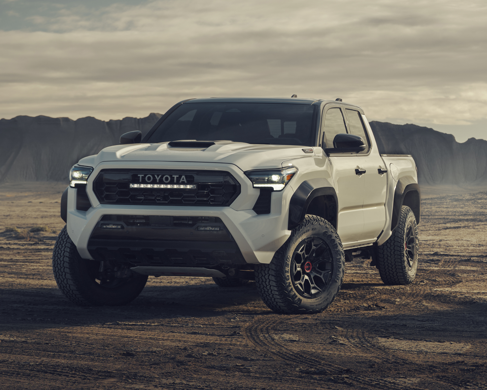

History
Toyota's history begins with Sakichi Toyoda, who invented the world's first automatic loom in 1924. His son, Kiichiro Toyoda, established the Automotive Division within Toyoda Automatic Loom Works in 1933, paving the way for Toyota's entry into car manufacturing. The company officially became Toyota Motor Corporation in 1937.
Products
| Rav4 | GR Supra | 4Runner | Tacoma |
|---|---|---|---|
 |
 |
 | |
| $30,645 | $56,900 | $40,700 | $31,690 |
| The Toyota RAV4 is a compact SUV known for its reliability, fuel efficiency, and versatile design. It's a popular choice for families and those seeking a balance between practicality and a touch of adventure. The RAV4 offers a range of features, including a hybrid model, all-wheel drive options, and advanced safety technologies. | The Toyota GR Supra is a high-performance sports car known for its powerful engine, sleek design, and track-focused handling. The "GR" stands for Gazoo Racing, Toyota's racing division, signifying its racing-inspired capabilities. The current generation, the fifth-generation Supra (MkV), is co-developed with BMW, offering a blend of Toyota's design philosophy and BMW's expertise in inline-six engines. | The Toyota 4Runner is a midsize SUV known for its off-road capabilities and reliability. It features a rugged body-on-frame construction, offering increased toughness and a comfortable ride. The 4Runner is equipped with a turbocharged 2.4-liter four-cylinder engine, providing 278 horsepower. It also includes a full-time four-wheel drive system with a two-speed transfer case for off-road adventures. | The Toyota Tacoma is a mid-size pickup truck introduced in 1995, known for its robust off-road capabilities and versatility. It's a popular choice for those who need a truck that can handle both daily commutes and outdoor adventures. The name "Tacoma" is derived from Mount Rainier in Washington State, also known as Tahoma or Tacoma by local Native American tribes. |